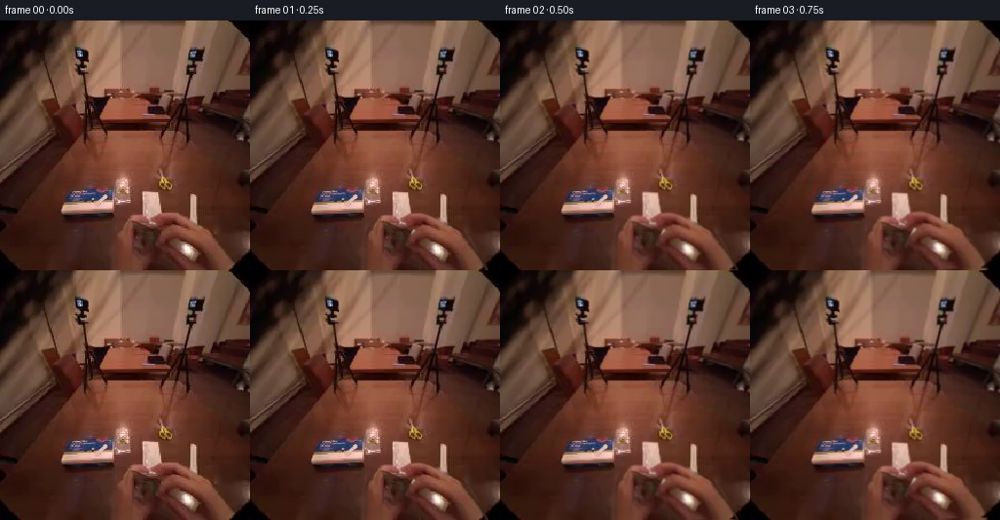
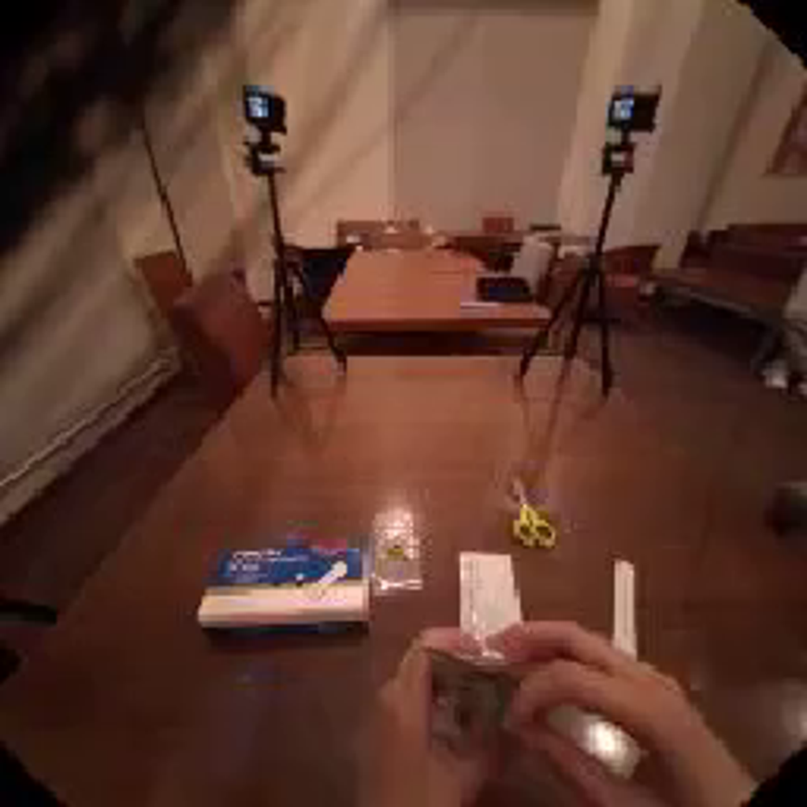
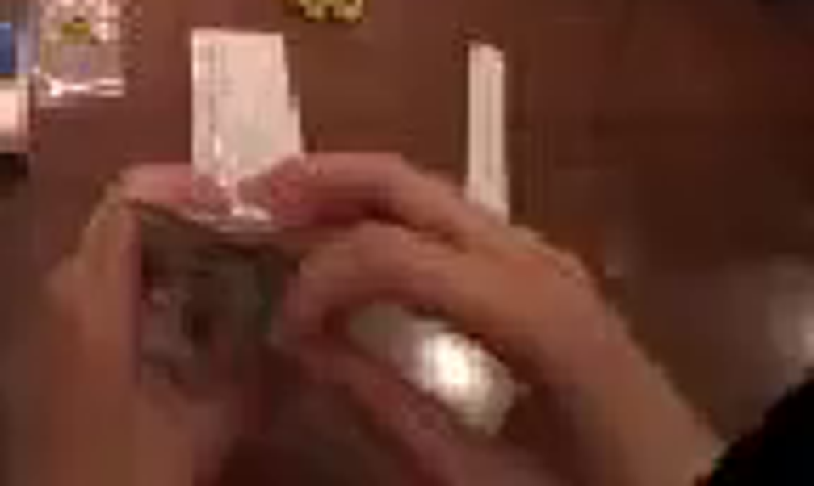
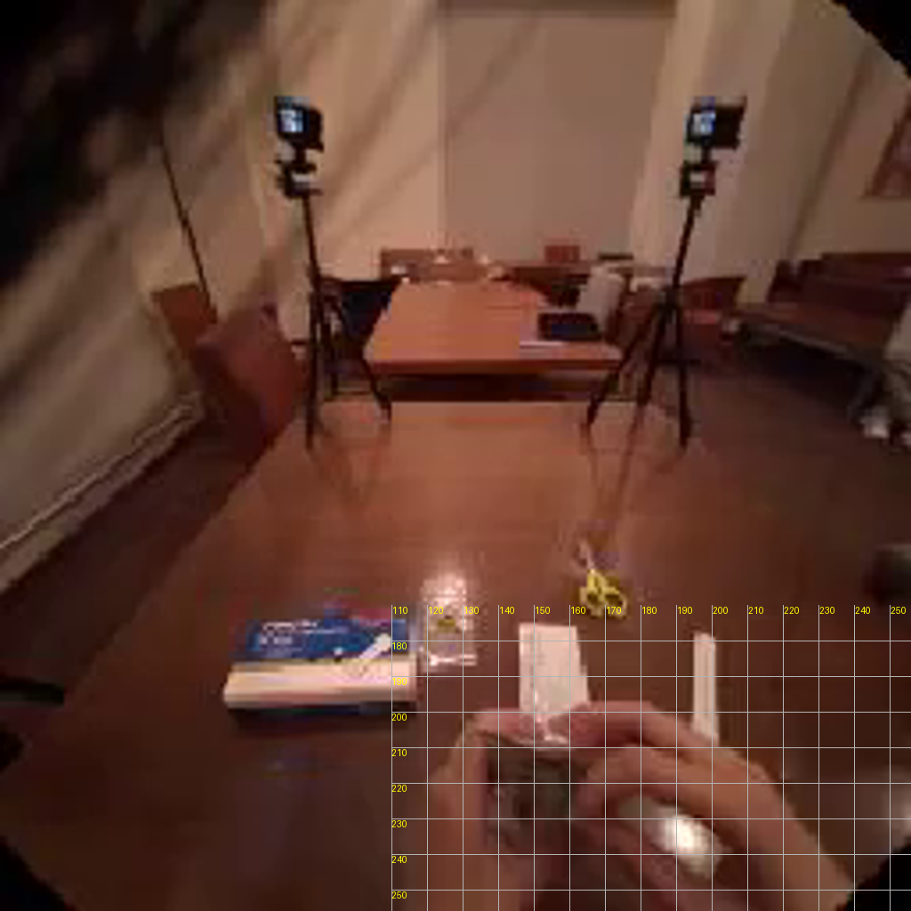
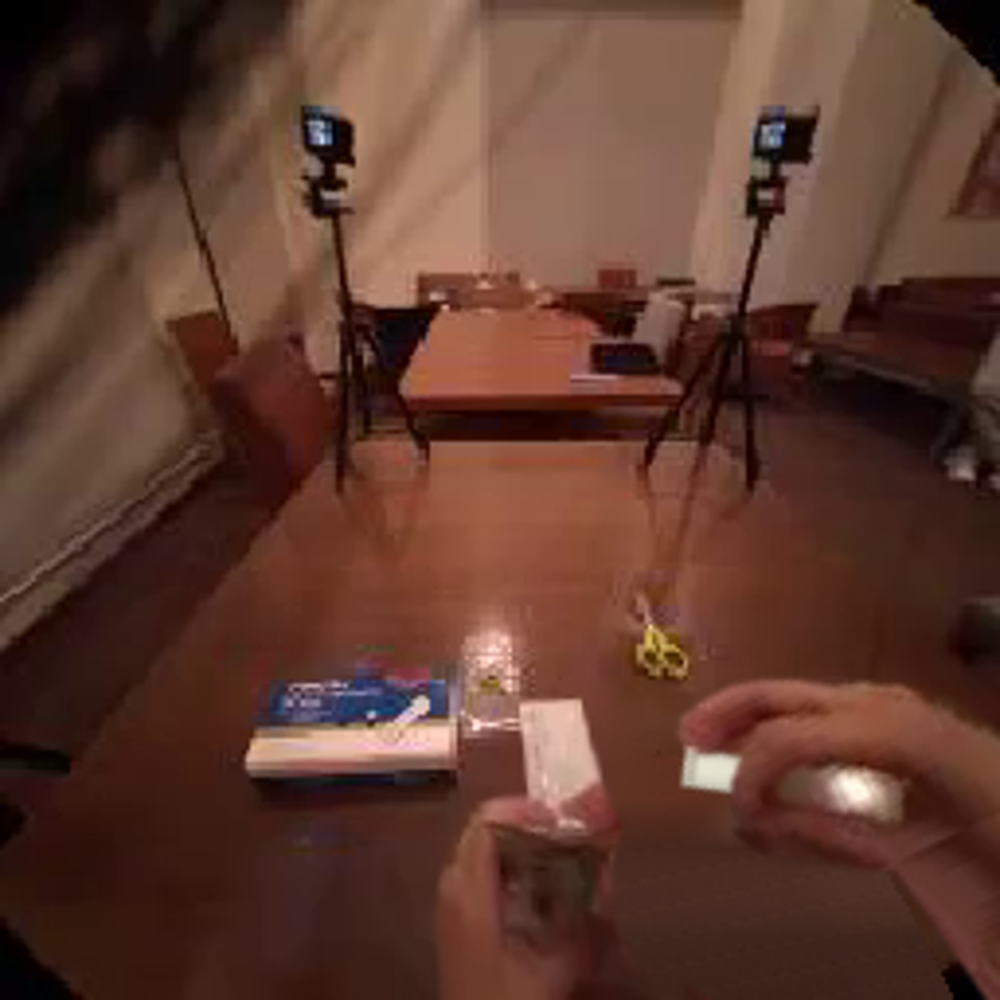

CODING AGENTS AS PIXEL WORLD MODELS
traex/GPT-6.1-Sol · common50_0026
点击播放 · 原生 RGB 像素
逐轮保存的候选
回放视频、检查图与代码变化。
每份候选均可单独播放。实际图片检查记录在下方工具轨迹中。
候选 01播放与检查图
点击播放 · 原生 RGB 像素

展开代码变化
--- 上一保存版本
+++ 本次保存版本
@@ -0,0 +1,142 @@
+from pathlib import Path
+import numpy as np
+from PIL import Image, ImageDraw, ImageFilter
+import cv2
+from artifact_io import save
+
+ROOT=Path(__file__).resolve().parent
+W=H=256
+EXT=380
+src=np.asarray(Image.open(ROOT/'first_frame.png').convert('RGB'))
+
+def polygon(points, size=(256,EXT), feather=.55):
+ scale=4
+ a=Image.new('L',(size[0]*scale,size[1]*scale),0)
+ ImageDraw.Draw(a).polygon([(round(x*scale),round(y*scale)) for x,y in points],fill=255)
+ a=a.resize(size,Image.Resampling.LANCZOS)
+ if feather: a=a.filter(ImageFilter.GaussianBlur(feather))
+ return np.asarray(a).astype(np.float32)/255
+
+leftpts=[(145.7,175.1),(161.8,175.8),(165,199.3),
+ (167,204),(169,210),(165,219),(165,236),(172,249),
+ (173,263),(169,380),(119,380),(118.9,251),(119.5,227),
+ (122,216),(127,206),(132,200.4),(138,198.9),(146,199.6)]
+rightpts=[(157.1,202.9),(160,199.4),(167,197.4),(175,197.4),
+ (183,199.7),(191,203.5),(198,208.4),(205,210.2),(215,216),
+ (223,223),(230,234),(236,245),(242,258),(285,380),(214,380),
+ (193,258),(180,251),(168,244),(162,238),(159,232),(161,226),
+ (164,220),(169,215),(165,212),(160,210),(157,207)]
+la=polygon(leftpts)
+ra=polygon(rightpts)
+# Native pixels provide skin, nail, knuckle and object textures.
+src_ext=np.zeros((EXT,256,3),np.uint8);src_ext[:256]=src
+for y in range(256,EXT):
+ row=249+int(5*np.sin((y-256)*.12))
+ src_ext[y]=src[row]
+ # Continue the right wrist beyond the original field of view.
+ shift=int((y-256)*.39)
+ xx=np.clip(np.arange(256)-shift,0,255)
+ src_ext[y,175:]=src[row,xx[175:]]
+
+remove=((la[:256]+ra[:256])>.02).astype(np.uint8)*255
+remove=cv2.dilate(remove,np.ones((3,3),np.uint8))
+bg=cv2.inpaint(src,remove,6,cv2.INPAINT_TELEA)
+# Broad occlusions reveal the same polished, dim tabletop. Interpolate its
+# illumination from immediately adjacent unobstructed table, adding its
+# native fine texture rather than a featureless synthetic fill.
+yy,xx=np.mgrid[:256,:256]
+sm=cv2.GaussianBlur(src.astype(np.float32),(0,0),3)
+filled=bg.astype(np.float32)
+for y in range(203,256):
+ l=sm[y,111]
+ r=sm[min(y,239),244]
+ for x in range(119,245):
+ t=np.clip((x-113)/134,0,1)
+ c=l*(1-t)+r*t
+ # Darker surface nearer the viewer.
+ c=c*(1-.0018*max(0,y-225))
+ px=90+(x*7+y*3)%21
+ py=204+(y*5+x)%39
+ tex=src[py,px].astype(float)-sm[py,px]
+ mix=np.clip((y-204)/13,0,1)*float(remove[y,x]>0)
+ filled[y,x]=filled[y,x]*(1-mix)+(c+tex*.40)*mix
+bg=np.clip(filled,0,255).astype(np.uint8)
+Image.fromarray(bg).save(ROOT/'.tmp/background.png')
+
+# A small, white cylindrical tube sits diagonally in the fingers. Its
+# concealed end is uncovered as the two hands separate.
+S=4
+tube=Image.new('RGBA',(256*S,EXT*S),(0,0,0,0))
+# Build the cylinder directly in source coordinates, at supersampled scale.
+A=np.array([155.,210.5]); B=np.array([195.,236.5])
+v=B-A; length=np.linalg.norm(v); u=v/length; n=np.array([-u[1],u[0]])
+# Cylinder shading and subdued reflection match the room's warm illumination.
+tarr=np.zeros((EXT*S,256*S,4),np.uint8)
+ty,tx=np.mgrid[:EXT*S,:256*S]; pp=np.stack([tx/S,ty/S],axis=-1)
+along=(pp-A)@u; across=(pp-A)@n
+width=5.5
+inside=(along>=0)&(along<=length)&(np.abs(across)<=width)
+light=0.65+0.35*np.sqrt(np.maximum(0,1-(across/width)**2))
+colors=np.stack([232*light,229*light,211*light],-1)
+# very gentle native texture on the tube surface
+rng=np.random.default_rng(43)
+noise=rng.normal(0,.65,(EXT*S,256*S,1))
+tarr[:,:,:3]=np.clip(colors+noise,0,255).astype(np.uint8)
+tarr[:,:,3]=inside.astype(np.uint8)*255
+# Rounded, crimped end, and cap ridges.
+tube=Image.fromarray(tarr,'RGBA');d=ImageDraw.Draw(tube)
+def line(a,b,col,w): d.line(tuple((np.array([a,b])*S).reshape(-1)),fill=col,width=max(1,round(w*S)))
+for dist in [1,2,3]:
+ c=A+u*dist
+ line(c-n*4.5,c+n*4.5,(173,168,151,235),.55)
+# This tube is behind both gripping fingers and packaging.
+tube=np.asarray(tube.resize((256,EXT),Image.Resampling.LANCZOS)).astype(np.float32)
+
+# Narrow native tube patch is retained in the front of the grip, preserving
+# its bright reflection at the position of the thumb.
+def matrix(center,dx,dy,angle):
+ a=np.deg2rad(angle);co=np.cos(a);si=np.sin(a)
+ c=np.asarray(center,dtype=float)
+ R=np.array([[co,-si],[si,co]],np.float32)
+ return np.column_stack([R,c+np.array([dx,dy])-R@c]).astype(np.float32)
+def layer(base,colors,alpha,M):
+ # Premultiplied sampling avoids dark fringes on translucent edges.
+ a=cv2.warpAffine(alpha.astype(np.float32),M,(W,H),flags=cv2.INTER_LINEAR,borderMode=cv2.BORDER_CONSTANT)
+ rgb=cv2.warpAffine(colors.astype(np.float32)*alpha[:,:,None],M,(W,H),flags=cv2.INTER_LINEAR,borderMode=cv2.BORDER_CONSTANT)
+ return base*(1-a[:,:,None])+rgb
+
+def ease(x):
+ x=np.clip(x,0,1);return x*x*(3-2*x)
+
+frames=[src.copy()]
+for i in range(1,20):
+ t=i/19
+ # Close grip first, then a sustained pull with a brief resistance/regrip.
+ p=ease((t-.06)/.85)
+ tension=np.sin(np.pi*np.clip((t-.08)/.43,0,1))
+ rdx=28*p + .7*tension
+ rdy=-35*p -1.4*tension
+ rot=-25*p
+ # The holding hand opposes the pull, keeping the clear sleeve low and left.
+ ldx=-8*p-.7*tension
+ ldy=3.8*p+1.3*tension
+ lrot=-5.5*p
+ ML=matrix((148,229),ldx,ldy,lrot)
+ MR=matrix((196,238),rdx,rdy,rot)
+ out=bg.astype(np.float32)
+ # Moving contact shadows on the tabletop.
+ shadow=cv2.warpAffine((la*.14+ra*.16).astype(np.float32),MR,(256,256))
+ shadow=cv2.GaussianBlur(shadow,(0,0),3)
+ out*=1-shadow[:,:,None]*.32
+ out=layer(out,tube[:,:,:3],tube[:,:,3]/255,MR)
+ out=layer(out,src_ext,la,ML)
+ out=layer(out,src_ext,ra,MR)
+ # Small first-person head drift, never an abrupt scene or scale change.
+ sway=.48*np.sin(t*np.pi*2)*ease(t*6)
+ tilt=.42*np.sin(t*np.pi)
+ cam=matrix((128,150),sway,tilt,.13*np.sin(t*np.pi*2))
+ out=cv2.warpAffine(out,cam,(256,256),flags=cv2.INTER_LINEAR,borderMode=cv2.BORDER_REFLECT_101)
+ frames.append(np.clip(out,0,255).astype(np.uint8))
+frames=np.stack(frames)
+save(frames,ROOT)
+print('Saved',frames.shape)
候选 02播放与检查图
点击播放 · 原生 RGB 像素

展开代码变化
--- 上一保存版本
+++ 本次保存版本
@@ -31,7 +31,7 @@
# Native pixels provide skin, nail, knuckle and object textures.
src_ext=np.zeros((EXT,256,3),np.uint8);src_ext[:256]=src
for y in range(256,EXT):
- row=249+int(5*np.sin((y-256)*.12))
+ row=255
src_ext[y]=src[row]
# Continue the right wrist beyond the original field of view.
shift=int((y-256)*.39)
@@ -84,7 +84,7 @@
tarr[:,:,:3]=np.clip(colors+noise,0,255).astype(np.uint8)
tarr[:,:,3]=inside.astype(np.uint8)*255
# Rounded, crimped end, and cap ridges.
-tube=Image.fromarray(tarr,'RGBA');d=ImageDraw.Draw(tube)
+tube=Image.fromarray(tarr);d=ImageDraw.Draw(tube)
def line(a,b,col,w): d.line(tuple((np.array([a,b])*S).reshape(-1)),fill=col,width=max(1,round(w*S)))
for dist in [1,2,3]:
c=A+u*dist
@@ -139,4 +139,9 @@
frames.append(np.clip(out,0,255).astype(np.uint8))
frames=np.stack(frames)
save(frames,ROOT)
+writer=cv2.VideoWriter(str(ROOT/'video.mp4'),cv2.VideoWriter_fourcc(*'mp4v'),4,(256,256))
+if writer.isOpened():
+ for frame in frames:
+ writer.write(cv2.cvtColor(frame,cv2.COLOR_RGB2BGR))
+ writer.release()
print('Saved',frames.shape)
候选 03播放与检查图
可观测工具轨迹
实际执行的命令与返回图片。
命令 1exit 0
/bin/bash -lc "ls -la && cat prompt.txt && printf '\\n--- RULES ---\\n' && cat GENERATION_RULES.md"
命令 2exit 0
/bin/bash -lc "cat task_spec.json && cat artifact_io.py && python - <<'PY'
from PIL import Image
im=Image.open('first_frame.png'); im.resize((1024,1024)).save('.tmp/first_large.png')
PY"命令 3exit 0
/bin/bash -lc "python - <<'PY'
from PIL import Image
im=Image.open('first_frame.png');im.crop((112,170,256,256)).resize((1008,602)).save('.tmp/crop.png')
import importlib.util
for lib in ['scipy','cv2','numpy','PIL']:
print(lib, bool(importlib.util.find_spec(lib)))
PY"命令 4exit 0
/bin/bash -lc "python - <<'PY'
from PIL import Image,ImageDraw
im=Image.open('first_frame.png').resize((1024,1024));d=ImageDraw.Draw(im)
for x in range(110,256,10):
d.line((x*4,170*4,x*4,1024),fill=(180,180,180),width=1);d.text((x*4+1,680),str(x),fill=(255,255,0))
for y in range(180,256,10):
d.line((110*4,y*4,1024,y*4),fill=(180,180,180));d.text((440,y*4),str(y),fill=(255,255,0))
im.save('.tmp/grid.png')
PY"命令 5exit 0
/bin/bash -lc "cat > generate.py <<'PY'
from pathlib import Path
import numpy as np
from PIL import Image, ImageDraw, ImageFilter
import cv2
from artifact_io import save
ROOT=Path(__file__).resolve().parent
W=H=256
EXT=380
src=np.asarray(Image.open(ROOT/'first_frame.png').convert('RGB'))
def polygon(points, size=(256,EXT), feather=.55):
scale=4
a=Image.new('L',(size[0]*scale,size[1]*scale),0)
ImageDraw.Draw(a).polygon([(round(x*scale),round(y*scale)) for x,y in points],fill=255)
a=a.resize(size,Image.Resampling.LANCZOS)
if feather: a=a.filter(ImageFilter.GaussianBlur(feather))
return np.asarray(a).astype(np.float32)/255
leftpts=[(145.7,175.1),(161.8,175.8),(165,199.3),
(167,204),(169,210),(165,219),(165,236),(172,249),
(173,263),(169,380),(119,380),(118.9,251),(119.5,227),
(122,216),(127,206),(132,200.4),(138,198.9),(146,199.6)]
rightpts=[(157.1,202.9),(160,199.4),(167,197.4),(175,197.4),
(183,199.7),(191,203.5),(198,208.4),(205,210.2),(215,216),
(223,223),(230,234),(236,245),(242,258),(285,380),(214,380),
(193,258),(180,251),(168,244),(162,238),(159,232),(161,226),
(164,220),(169,215),(165,212),(160,210),(157,207)]
la=polygon(leftpts)
ra=polygon(rightpts)
# Native pixels provide skin, nail, knuckle and object textures.
src_ext=np.zeros((EXT,256,3),np.uint8);src_ext[:256]=src
for y in range(256,EXT):
row=249+int(5*np.sin((y-256)*.12))
src_ext[y]=src[row]
# Continue the right wrist beyond the original field of view.
shift=int((y-256)*.39)
xx=np.clip(np.arange(256)-shift,0,255)
src_ext[y,175:]=src[row,xx[175:]]
remove=((la[:256]+ra[:256])>.02).astype(np.uint8)*255
remove=cv2.dilate(remove,np.ones((3,3),np.uint8))
bg=cv2.inpaint(src,remove,6,cv2.INPAINT_TELEA)
# Broad occlusions reveal the same polished, dim tabletop. Interpolate its
# illumination from immediately adjacent unobstructed table, adding its
# native fine texture rather than a featureless synthetic fill.
yy,xx=np.mgrid[:256,:256]
sm=cv2.GaussianBlur(src.astype(np.float32),(0,0),3)
filled=bg.astype(np.float32)
for y in range(203,256):
l=sm[y,111]
r=sm[min(y,239),244]
for x in range(119,245):
t=np.clip((x-113)/134,0,1)
c=l*(1-t)+r*t
# Darker surface nearer the viewer.
c=c*(1-.0018*max(0,y-225))
px=90+(x*7+y*3)%21
py=204+(y*5+x)%39
tex=src[py,px].astype(float)-sm[py,px]
mix=np.clip((y-204)/13,0,1)*float(remove[y,x]>0)
filled[y,x]=filled[y,x]*(1-mix)+(c+tex*.40)*mix
bg=np.clip(filled,0,255).astype(np.uint8)
Image.fromarray(bg).save(ROOT/'.tmp/background.png')
# A small, white cylindrical tube sits diagonally in the fingers. Its
# concealed end is uncovered as the two hands separate.
S=4
tube=Image.new('RGBA',(256*S,EXT*S),(0,0,0,0))
# Build the cylinder directly in source coordinates, at supersampled scale.
A=np.array([155.,210.5]); B=np.array([195.,236.5])
v=B-A; length=np.linalg.norm(v); u=v/length; n=np.array([-u[1],u[0]])
# Cylinder shading and subdued reflection match the room's warm illumination.
tarr=np.zeros((EXT*S,256*S,4),np.uint8)
ty,tx=np.mgrid[:EXT*S,:256*S]; pp=np.stack([tx/S,ty/S],axis=-1)
along=(pp-A)@u; across=(pp-A)@n
width=5.5
inside=(along>=0)&(along<=length)&(np.abs(across)<=width)
light=0.65+0.35*np.sqrt(np.maximum(0,1-(across/width)**2))
colors=np.stack([232*light,229*light,211*light],-1)
# very gentle native texture on the tube surface
rng=np.random.default_rng(43)
noise=rng.normal(0,.65,(EXT*S,256*S,1))
tarr[:,:,:3]=np.clip(colors+noise,0,255).astype(np.uint8)
tarr[:,:,3]=inside.astype(np.uint8)*255
# Rounded, crimped end, and cap ridges.
tube=Image.fromarray(tarr,'RGBA');d=ImageDraw.Draw(tube)
def line(a,b,col,w): d.line(tuple((np.array([a,b])*S).reshape(-1)),fill=col,width=max(1,round(w*S)))
for dist in [1,2,3]:
c=A+u*dist
line(c-n*4.5,c+n*4.5,(173,168,151,235),.55)
# This tube is behind both gripping fingers and packaging.
tube=np.asarray(tube.resize((256,EXT),Image.Resampling.LANCZOS)).astype(np.float32)
# Narrow native tube patch is retained in the front of the grip, preserving
# its bright reflection at the position of the thumb.
def matrix(center,dx,dy,angle):
a=np.deg2rad(angle);co=np.cos(a);si=np.sin(a)
c=np.asarray(center,dtype=float)
R=np.array([[co,-si],[si,co]],np.float32)
return np.column_stack([R,c+np.array([dx,dy])-R@c]).astype(np.float32)
def layer(base,colors,alpha,M):
# Premultiplied sampling avoids dark fringes on translucent edges.
a=cv2.warpAffine(alpha.astype(np.float32),M,(W,H),flags=cv2.INTER_LINEAR,borderMode=cv2.BORDER_CONSTANT)
rgb=cv2.warpAffine(colors.astype(np.float32)*alpha[:,:,None],M,(W,H),flags=cv2.INTER_LINEAR,borderMode=cv2.BORDER_CONSTANT)
return base*(1-a[:,:,None])+rgb
def ease(x):
x=np.clip(x,0,1);return x*x*(3-2*x)
frames=[src.copy()]
for i in range(1,20):
t=i/19
# Close grip first, then a sustained pull with a brief resistance/regrip.
p=ease((t-.06)/.85)
tension=np.sin(np.pi*np.clip((t-.08)/.43,0,1))
rdx=28*p + .7*tension
rdy=-35*p -1.4*tension
rot=-25*p
# The holding hand opposes the pull, keeping the clear sleeve low and left.
ldx=-8*p-.7*tension
ldy=3.8*p+1.3*tension
lrot=-5.5*p
ML=matrix((148,229),ldx,ldy,lrot)
MR=matrix((196,238),rdx,rdy,rot)
out=bg.astype(np.float32)
# Moving contact shadows on the tabletop.
shadow=cv2.warpAffine((la*.14+ra*.16).astype(np.float32),MR,(256,256))
shadow=cv2.GaussianBlur(shadow,(0,0),3)
out*=1-shadow[:,:,None]*.32
out=layer(out,tube[:,:,:3],tube[:,:,3]/255,MR)
out=layer(out,src_ext,la,ML)
out=layer(out,src_ext,ra,MR)
# Small first-person head drift, never an abrupt scene or scale change.
sway=.48*np.sin(t*np.pi*2)*ease(t*6)
tilt=.42*np.sin(t*np.pi)
cam=matrix((128,150),sway,tilt,.13*np.sin(t*np.pi*2))
out=cv2.warpAffine(out,cam,(256,256),flags=cv2.INTER_LINEAR,borderMode=cv2.BORDER_REFLECT_101)
frames.append(np.clip(out,0,255).astype(np.uint8))
frames=np.stack(frames)
save(frames,ROOT)
print('Saved',frames.shape)
PY
python generate.py"命令 6exit 0
/bin/bash -lc "python - <<'PY'
from PIL import Image
Image.open('frames/19.png').resize((1024,1024)).save('.tmp/last_large.png')
PY"命令 7exit 0
/bin/bash -lc "which ffmpeg || true; python - <<'PY'
from PIL import Image
import numpy as np
im=np.asarray(Image.open('first_frame.png'))
print(im[248,216:240,:])
PY"命令 8exit 0
/bin/bash -lc "python generate.py && python - <<'PY'
import numpy as np
from PIL import Image
from pathlib import Path
z=np.load('pixels.npz')['pixels']
f=np.asarray(Image.open('first_frame.png').convert('RGB'),dtype=np.uint32)
p=(f[:,:,0]<<16)|(f[:,:,1]<<8)|f[:,:,2]
assert z.shape==(256,256,20)
assert np.array_equal(z[:,:,0],p)
assert len(list(Path('frames').glob('*.png')))==20
print('Verified: 20 RGB frames, 256x256, exact first-frame match.')
print('MP4:',Path('video.mp4').stat().st_size,'bytes')
PY"视觉工具实际返回图片 1

视觉工具实际返回图片 2

视觉工具实际返回图片 3

视觉工具实际返回图片 4

视觉工具实际返回图片 5

保存候选 3 份；完成命令 8 次；可验证图片返回 5 张。原始 API 响应与完整日志保留在本地。